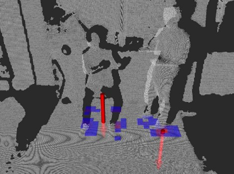
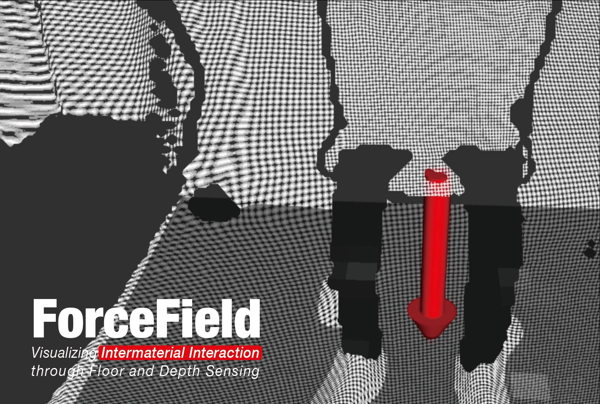
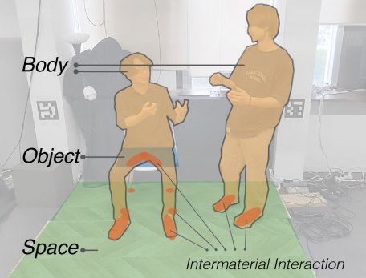
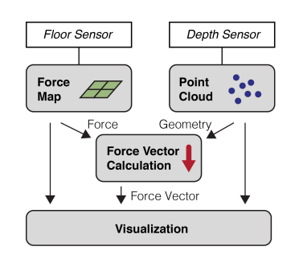

ForceField
— Visualizing Intermaterial Interaction

Abstract
ForceField realizes the measurement of intermaterial contact forces across any surface within a room-scale environment without the need for additional device attachments to bodies or objects. It achieves this by acquiring a 3D model through a depth sensor and capturing ground pressure through a floor sensor, and then reconstructing contact forces between surfaces where no sensors are attached, such as when a hand pushes a desk, or people push against each other, from information on force and geometry. Through this unobtrusive environmental measurement approach, ForceField opens up the possibility of highly physical spatial interactions in domains such as healthcare, sports, and entertainment.
ForceField は、身体や物体に追加のデバイスを装着することなく、ルームスケール空間のあらゆる面における物体間の接触力を計測する手法である。深度センサで三次元形状を取得し、床センサで接地圧を取得したうえで、センサを取り付けていない面同士の接触力——例えば手が机を押す、あるいは人と人が押し合うような力——を、力と幾何の情報から再構成する。この非侵襲的な環境計測アプローチにより、ForceField はヘルスケア、スポーツ、エンターテインメントなどの領域で、物理性の高い空間インタラクションの可能性を拓く。



